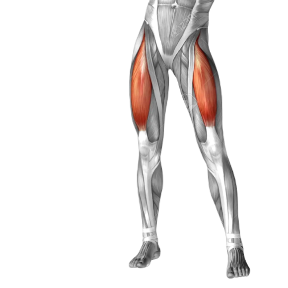

Shoulders
Your shoulders are comprised of three major muscles known as deltoids, and here’s how they look:
The delts mainly work to stabilize nearby muscle groups like the pecs, lats, and biceps. The rear delts help the lats and traps bring the arm behind you, the front delts help the pecs bring your arms in front of you, and your lateral delts help the traps, pecs, and other muscles around your neck and upper back raise your arm to the side. This is important, because the angle at which you press or pull will change how much the delts are trained relative to other muscles. For example, an overhead press will use more lateral delt than upper chest, and a barbell row will use more rear delt than a lat pulldown.
It’s very important to develop all three heads of this muscle because if one is lagging, it will be painfully obvious. In most cases, the lateral and posterior deltoids need the most work because the anterior deltoids do get trained to some degree in a good chest workout, and nobody skips chest day. Chest training doesn’t adequately train the other two deltoid heads though, which is why it’s best to include some additional exercises that also train your lateral and posterior delts.
If you want to develop all three heads of your deltoids, you want to focus on shoulder exercises like these:
Chest
The main muscle of the chest is the Pectoralis major, or “Pec” major.
The chest muscle’s main function is to bring the upper arm across the body. Unlike most other muscles, though, the fibers of the chest muscle aren’t all aligned in the same direction. As you can see, the pec major has multiple “heads,” or places where the muscle fibers attach to the skeleton. There’s a sternocostal head, which attaches the sternum and ribcage to your upper arm, and a clavicular head, which attaches your collarbone to your upper arm.
Why is this important? Well, how a muscle attaches to the surrounding skeleton changes how you should train it. Exercises that involve pushing the arms in front of the chest, like the flat and decline bench press, emphasize the larger sternocostal head of the pecs. Exercises that involve moving the arms up and away from the chest, like the incline and reverse-grip bench press, emphasize the smaller clavicular head.
Thus, if you want to develop a full, proportionate, well-defined chest, you want to focus on chest exercises like these:
Back
The four muscles that make up the bulk of the back, and that we want to focus on developing, are the: Trapezius, Rhomboids, Latissimus dorsi and Erector spinae.

There are a few smaller bundles of muscle that matter as well, such as the teres major and minor, and the infraspinatus.
As you can see, the lats attach your upper arm to your back to form a winglike shape. Your traps connect your spine to your shoulder blades. The spinal erectors run parallel to your spine, and do exactly what you’d expect—keep your spine stabilized and upright. The rhomboids stabilize your shoulder blades by linking them to your spine.
Many people neglect directly training this muscle group because it isn’t a “mirror muscle.” That’s a mistake, though, because developing a wide, thick, defined back is one of the best ways to take your physique from “decent” to “exceptional.”
If that’s your goal, then you want to focus on back exercises like these:
Arms
The arms are made of four primary muscles: Biceps brachii, Biceps brachialis, Triceps and Forearms.
Biceps brachialis lies beneath the biceps brachii and assists it in flexing at the elbow. While this muscle isn’t nearly as prominent as the biceps brachii, it plays an important role in the overall appearance of your arms. When well developed, the brachialis looks like a “knot” in between the biceps brachii and triceps, and it noticeably impacts the overall appearance of the arms. First, it cleanly separates the biceps and triceps when flexed, which better showcases each. Second, it pushes the biceps brachii up, giving you a better “peak” when flexing.
The biceps’ job is to flex the arm, or bring your forearm closer to your upper arm. They also supinate the elbow, which means turning your hand upward as if you were about to catch something. To maximally stimulate the biceps, you typically want to keep your hands turned palm-up toward the ceiling.
The triceps, or triceps brachii, do the opposite job of the biceps, pushing your forearm away from your upper arm.
When most people think of arm muscles, they think of the biceps. Ironically, the biceps contribute substantially less to overall arm size than the triceps, which are a much larger muscle group. Small triceps mean small, disproportionate arms, regardless of the size of the biceps.
Last but not least are the forearms, which are comprised of several small muscles:
Forearms are like the calves of the arms. They aren’t the immediate focus, but if they’re underdeveloped, it’s sorely obvious. If they’re well developed, however, it greatly enhances the whole appearance of the limbs.
So, if you want to develop strong, muscular, proportionate biceps, triceps, and forearms, you want to focus on arm exercises like these:
Core
Core is made up of the Rectus abdominis, Transverse abdominis, and the Internal and External obliques.
These muscles all stabilize the spine and help with spinal flexion, bringing your chest closer to your hips. For the sake of completeness, you could call the “core” a muscle group. In the context of building a workout plan, though, that’s not typically necessary. This is because if you’re training the other six major muscle groups with heavy compound exercises, your core is getting enough indirect training that you don’t really need a separate workout just for your core.
This doesn’t mean that direct core training is useless, however. Ab and core exercises aren’t required to get a six-pack, but they can improve your abdominal definition:
Legs
Legs are made up of several major muscle groups: Quadriceps, Hamstrings, Glutes and Calves.
Each of these muscle groups are best trained by different exercises, and each has “special needs” if you’re going to achieve maximal development and definition. There are quite a few different leg muscles, so let’s take a moment to discuss them separately.
Quads
The quadriceps are a set of four large muscles on the front of your legs: Vastus lateralis, Vastus medialis, Vastus intermedius, Rectus femoris.
The quadriceps muscles work together to extend the knees and flex theBarbell back squatBarbell front squat hips. Thus, quadriceps exercises bring the hip from an extended to a flexed position (bending the joint) and bring the knee from a flexed to an extended position (straightening the joint). When the quads are well developed, they form the centerpiece of the legs.
Now, many people believe that you can get all of the quad development you need from lots of heavy back squatting. The back squat is a fantastic exercise for your quads (and entire lower body), but for optimal quad development, you should periodically do others as well, including front squats and lunges.
If you want to maximally develop your quads, you want to focus on exercises like the:
Hamstrings
The hamstrings are a group of three muscles on the back of your legs: Semitendinosus, Semimembranosus, Biceps femoris.
The hamstrings work together to flex the knee, as when you’re doing a hamstring curl, and extend the hips during exercises like the hip thrust and deadlift. The biceps femoris is also split into two “heads” or sections, just like the biceps in your arm. Unlike the biceps, however, the hamstrings tend to be one of the most neglected muscles of the lower body. The quads get most of the attention because they’re larger and more visible, and this can create a muscular imbalance between the front and back of the thighs that looks strange and may increase the risk of injury.
Many people also think that squatting is all you need for your hamstrings, and this is mistaken. While the squat does involve the hamstrings, the quads do the lion’s share of the work. And this is especially true with the type of squatting that you often see in the gym (quarter- and half-repping). So, a good rule of thumb is to always include exercises that target your hamstrings in your lower body workouts, in addition to your quad-dominant exercises.
If you want to maximally develop your hamstrings, you want to focus on exercises like the:
- Barbell deadlift
- Sumo deadlift
- Romanian deadlift
- Hamstring curl machine
- Barbell good-morning
- Glute-ham raise machine
Glutes
The gluteus muscles, or “glutes,” are comprised of three muscles that form your butt: Gluteus maximus, Gluteus minimus, Gluteus medius.
They’re for more than just show, too. Together, they play a key role in stabilizing your body during all kinds of movement, and generating force in exercises like the deadlift and squat. Now, if you’re training your lower body correctly, you don’t have to do additional training for your glutes.
That said, if you feel your glutes are a weak point in your physique, or if you just want maximum booty, then you’ll want to include exercise that specifically targets them:
Calves
The calves are made up of two powerful muscles: Gastrocnemius and Soleus.
The gastrocnemius is the large (or not so much) muscle you see when you look at your calf. The soleus is a deep muscle that lies underneath the gastrocnemius. These two muscles work together to manipulate the foot and ankle joint and are involved in knee flexion as well.
When it comes to looks, we’re most concerned with the gastrocnemius, but a properly developed soleus is critical as well because it supports the larger gastroc both in function and visual size. Due to the way the calf muscles are oriented, it’s best to use different exercises to train each.
Standing calf presses and raises are done with the legs straight and emphasize the gastrocnemius.
Seated calf raises are done, well, seated and with the legs bent, which emphasizes the soleus.
It’s important to do both standing and seated calf work and to emphasize your standing exercises if you want to get the most out of your calf workouts. The reason for doing both is making sure that your soleus isn’t neglected and the reason for doing more standing than seated work is you want to focus most of your effort on training your gastrocnemius.
There aren’t that many worthwhile calf exercise variations you can do, but here are the ones you want to focus on: